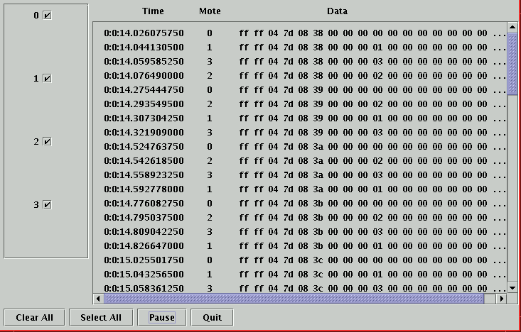

|
Lesson 5: Simulating TinyOS Applications in Nido Nido, packet sniffing, and dbg Last updated 6 Aug. 2002 |
Nido, the TinyOS simulator, compiles directly from TinyOS code. Built with make pc, the simulation runs natively on a desktop or laptop. Nido can simulate thousands of nodes simultaneously. Every mote in a simulation runs the same TinyOS program.
Nido provides run-time configurable debugging output, allowing a user to examine the execution of an application from different perspectives without needing to recompile. The simulation provides several mechanisms for interacting with the network; packet traffic can be monitored, packets can be statically or dynamically injected into the network. In this lesson, we won't be dealing with packet injection, which is discussed in Lesson 9
Nido is compiled by typing make pc in an application directory. In addition to the expected TinyOS components, a few simulator-specific files are compiled; these files provide functionality such as support for networking monitoring over TCP sockets.
Enter the apps/CntToLedsAndRfm directory. This application runs a 4Hz counter. On each counter tick, the application displays the least significant three bits of the counter on the mote LEDs and sends the entire 16-bit value in a packet. Build and install the application on a mote. You should see the LEDs blink; if you listen with a GenericBase mote, you should see messages of AM type 4 with an incrementing counter in the payload.
Build a Nido version of the application with make pc. The Nido executable is build/pc/main.exe. Type build/pc/main.exe --help to see a brief summary of its command-line usage. Nido has a single required parameter, the number of nodes to simulate. Type build/pc/main.exe 1 to run a simulation of a single node.
You should see a long stream of output fly by, most of which refer to radio bit events. Hit control-C to stop the simulation. If you look, almost every message is preceded by a 0:; this means that the message pertains to the execution of mote 0. Run a simulation of two motes (build/pc/main.exe 2); after it runs for a few seconds, stop the simulation with control-C. You should see messages for both mote 0 and mote 1.
By default, Nido prints out all debugging information. As radio bit events are fired at 20 or 40 KHz, these are the most frequent events in the simulator, they comprise most of the output in CntToLedsAndRfm. Given the application, we're more concerned with the packet output and mote LEDs than individual radio bits. Nido output can be configured by setting the DBG environment variable in a shell. Type export DBG=am,led in your shell; this makes only LED and AM packet output enabled. Run a one-mote simulation. You should see output similar to this:
|
The sixth byte of the packet contains the least significant byte of the two byte counter; in the first packet, it's hex 0x20 (32), in the second, it's hex 0x21 (33). As the LEDs show the bottom three bits of the counter, they are all off for the first packet and bit one is on for the second.
The full set of DBG modes can be seen by typing build/pc/main.exe --help; they are listed at the bottom of the output. For example:
|
Set DBG to crc. Run two mote imulation of CntToLedsAndRfm. You should see output indicating that both nodes are successfully receiving packets from each-other.
Four DBG modes are reserved for application components and debugging use: usr1, usr2, usr3, and temp. In TinyOS code, debug message commands have this syntax:
dbg(<mode>, const char* format, ...); |
The mode parameter specifies which under which DBG modes this message will be printed. The full set of modes can be found in tos/system/dbg_modes.h. The format and following parameters specify the string to output and have printf() semantics. For example, open tos/lib/Counter.td in your editor. In Clock.fire(), add this line just before the return statement:
dbg(DBG_TEMP, "Counter: Value is %i\n", (int)state); |
Set DBG to be temp and run a single mote simulation. You'll see the counter increment. In general, the DBG mode name in TinyOS code is the name used when you run the simulator, with DBG_prepended. For example, am is DBG_AM, packet is DBG_PACKET and boot is DBG_BOOT.
Just as you can enable multiple modes when running the simulator, a single debug message can be activated on multiple modes. Each mode is a bit in a large bitmask; one can use all of the standard logical operators (e.g. |, ~) . For example, change the debug message you just added to:
dbg(DBG_TEMP|DBG_USR1, "Counter: Value is %i\n", (int)state); |
It will now be printed if either temp or usr1 is enabled. Run the application to see this is the case..
Open another shell and go to the tools/java directory.
Run a four mote simulation of CntToLedsAndRfm in your original shell. Go back the shell in which you compiled the Java tools and run SimGUI (this order is important):
java net/tinyos/sim/SimGUI |
You should see the packets from the different motes in the window, something like this:

The checkboxes on the left side of the GUI enable or disable visualization of output from motes; the "Clear All" and "Select All" buttons refer to these selections. You can click on a specific packet to display a small window showing the entire message payload. Clicking the "Pause" button will pause the simulation and its output.
Quit the SimGUI.
One significant advantage of Nido is that, because it runs natively on a PC, you can use traditional debugging tools such as gdb. However, because Nido is a discrete event simulation for large numbers of motes, traditional step-through debugging techniques only work on an event basis, and not cross-events.
Unfortunately, gdb is generally designed for C and not nesC; the component model of nesC means that a single command can have multiple providers; referring to a specific command requries specifying the component, interface, and command. For example, to break on entry to the redOff command of the Leds interface of LedsC, one must type:
(gdb) break *LedsC$Leds$redOff Breakpoint 1 at 0x804c644: file tos/system/LedsC.td, line 97. |
The leading * is necessary so gdb can parse the function name correctly; otherwise, it looks for the function LedsC.
Variables are similarly named. For example, to print the ledsOn variable of LedsC (which keeps track of on/off for the toggle commands), one types:
(gdb) print LedsC$LedsOn $3 = '\0' <repeats 999 times> |
Actually, this isn't quite correct, as the output above shows; in Nido, ledsOn isn't a single uint8_t, but an array of 1000 of them. This is how Nido handles the state of many motes; it compiles fields to be arrays of n elements, where n is the maximum simulation size. Whenever a mote accesses a component's state, it indexes into the array based on its node ID. Therefore, to refer to a specific mote's state, one needs to index into the array properly:
(gdb) print LedsC$ledsOn[tos_state.current_node] $2 = 0 '\0' |
We've supplied a simple gdb macro named VAR that handles this for you. Copy tos/platform/pc/.gdbinit to your home directory (if there's already a .gdbinit there, just append this file). Quit gdb and start it again. Break in LedsC$Leds$redOff as before. Now, instead of the above command line, you can type:
(gdb) VAR LedsC$ledsOn $3 = 0 '\0' |
This tutorial only covers some of the functionality and usefulness of Nido; for example, as Nido simulates the TinyOS networking stack at bit granularity, radio models can accurately simulate difficult issues that arise, such as the hidden node problem. Similarly, one can test and debug low-level protocols (such as start symbol detection) in addition to application components and routing protocols. The Nido System Description goes into greater details on these capabilities and presents some information on Nido's implementation.